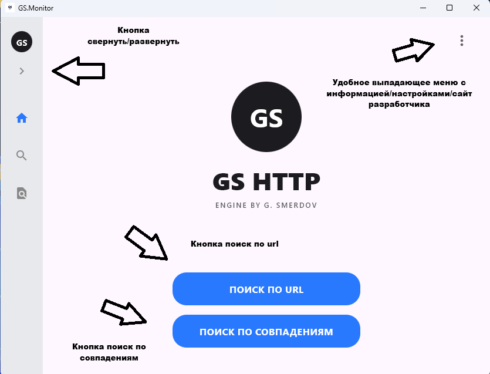
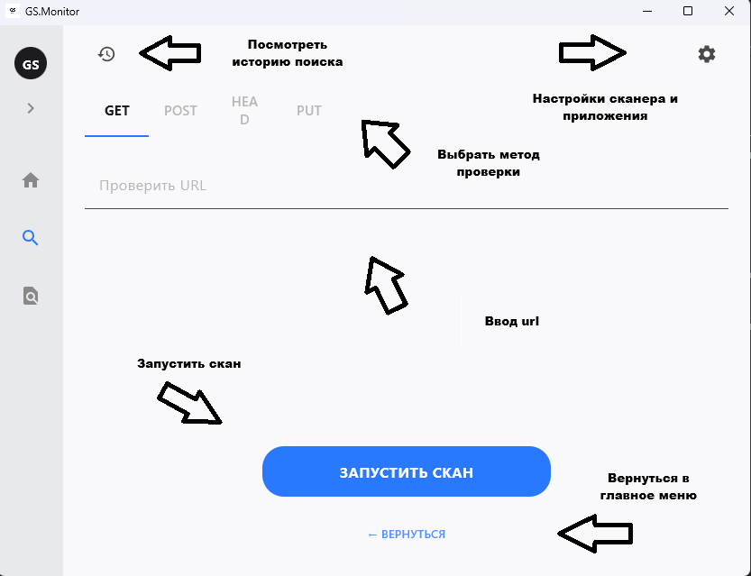
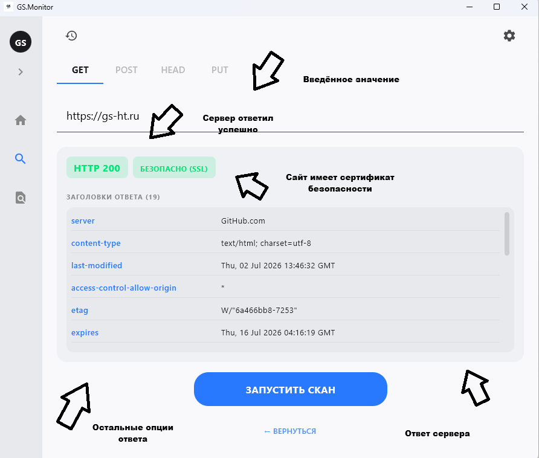
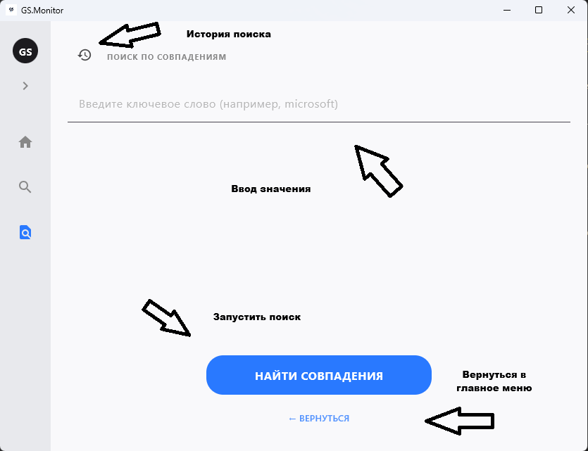
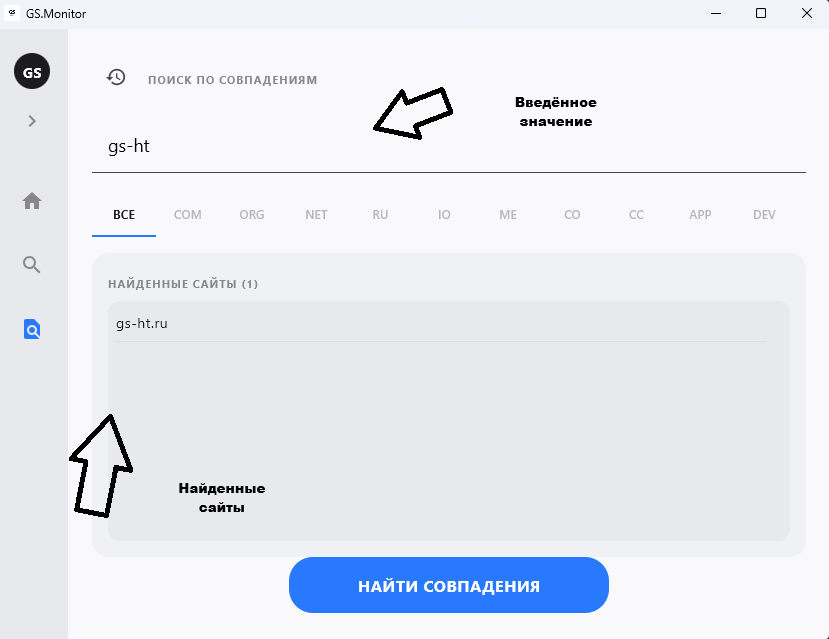
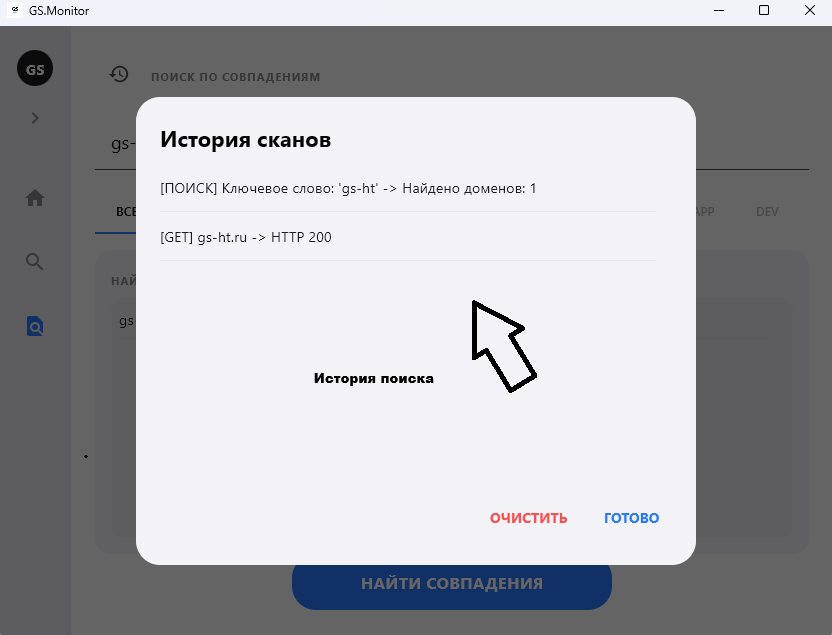
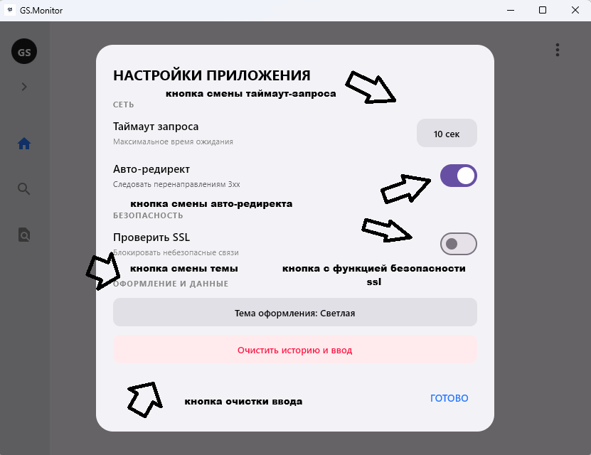
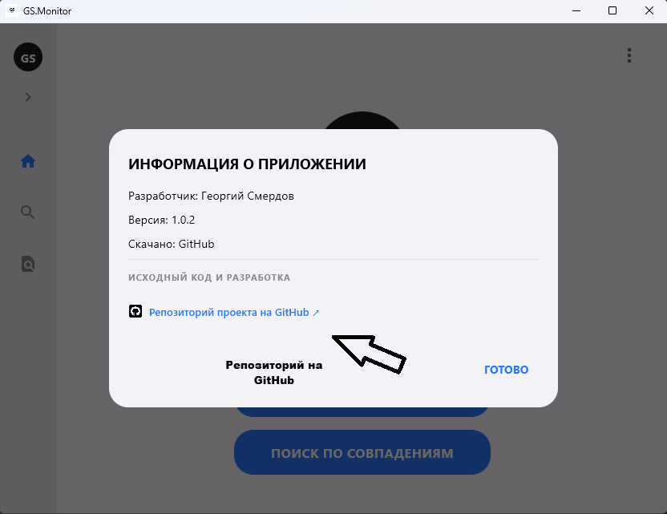
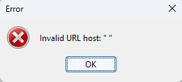

Вводная часть
Установка приложения
Запуск приложения
Поиск по url
Поиск по совпадениям
История поиска
Настройки приложения
Окно Информации
Частая ошибка
Завершение/Сотрудничество/Связь
GS.Monitor - мощный анализ HTTP-траффика/аналог android приложения GS.HTTP
GS.Monitor(далее - приложение) проверяет сайты на наличие их доступности, а также находит их по введённому значению.
Системные требования приложения разных типов установок:
Windows: 7/10/11 !> 150MB
Linux/Debian/Ubuntu: 11/12 !> 70MB
Скачать приложение можно на GitHub в разделе Realeases в репозитории
Важно там будет одна версия для скачиваний , но будет много файлов, чтобы ориентироваться и не запутаться в установке, рекомендую ознакомиться с файлами каждой операционной системы:
.msi - Windows
.exe - Windows
.deb - Linux/Debian
.zip - Source code Windows/Portable version
tar.gz - Source code Linux
После того как вы установили приложение, то вы сразу же можете его запустить, никаких дополнительных настроек и компонентов для его работы не требуются.

Сейчас мы рассмотрим первую работу приложения, как проверить определённый сайт на наличие его доступности и узнать дополнительные подробности.


В приложении также доступно меню "поиск по совпадениям", главная задача которого включается найти тот или иной сайт по названию любого слова.






На этом пока документация подошла к концу, но она будет обновляться при добавлений новых функций.
Следить за новостями проекта можно в telegram-канале.
Если вы хотите помочь проекту: Добавить функцию или поправить что-то, то здесь у вас нет каких-либо ограничений вы можете взять и форкнуть репозиторий на GitHub в разделе forks, полностью его перестроив или изменив какие либо значения.
Это свободно, потому что там есть лицензия MIT License, не имеющих жёсткий ограничений по репозиторию, но сохраняет моё авторство.
Если вы уже написали изменения в код или перестроили приложение то вы можете связаься со мной и я оценю ваш код, возможно добавлю ваш форк как независимое дополнение к своей экосистеме.
Связаться можно по почте:
georgsmerdov@outlook.com: en
smerdovgeorgy@yandex.ru: ru
Написать в боты мессенджеров:
MAX чат-бот command: /support
Telegram-бот command: /support
© 2026 Георгий Смердов (ГС Екосистем).
Все права защищены.